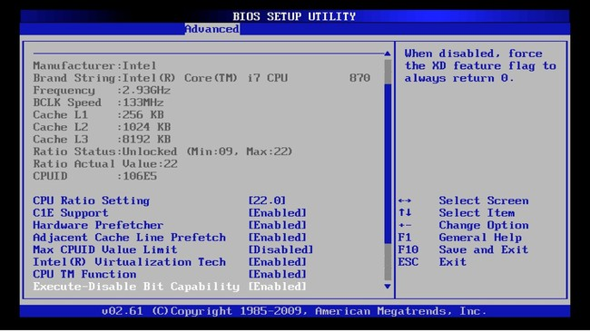
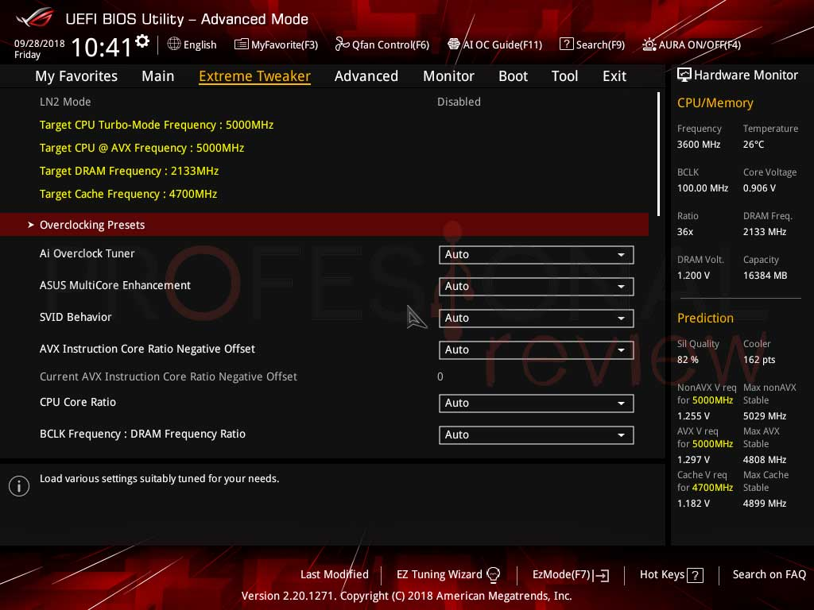
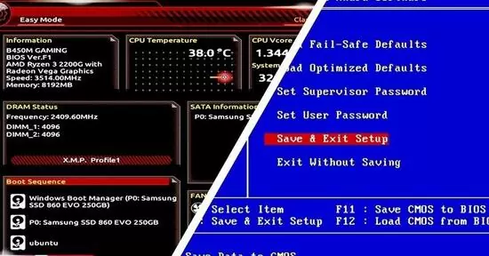
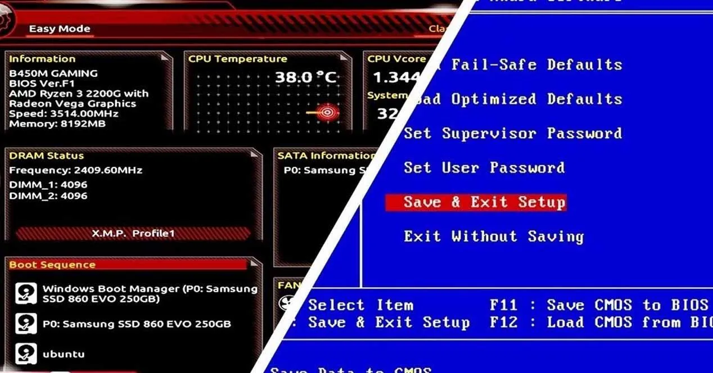
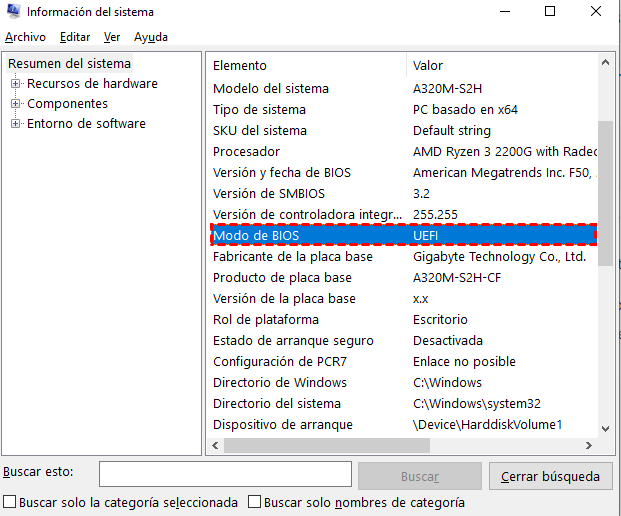

Diferencias entre arranque UEFI y BIOS Legacy
Cuando instalas o configuras un sistema operativo, es fundamental conocer si tu equipo utiliza UEFI o BIOS Legacy. Ambos son sistemas de firmware que permiten arrancar el ordenador, pero existen diferencias clave que pueden afectar la compatibilidad, seguridad y rendimiento de tu PC.
💾 ¿Qué es BIOS Legacy?
El BIOS Legacy (Basic Input/Output System) es el sistema tradicional presente en computadoras más antiguas. Su función principal es iniciar el hardware básico y buscar un dispositivo de arranque. Solo reconoce discos con formato MBR, limitando las particiones a 2 TB y a un máximo de 4 particiones primarias.

⚡ ¿Qué es UEFI?
UEFI (Unified Extensible Firmware Interface) es el reemplazo moderno del BIOS. Ofrece interfaz gráfica con ratón, soporte nativo de discos GPT (sin límite de 2 TB) y funciones críticas de seguridad como Secure Boot.

📋 Principales diferencias
- Compatibilidad de discos: BIOS solo soporta MBR; UEFI soporta GPT y MBR.
- Interfaz: BIOS es texto simple; UEFI tiene interfaz gráfica y ratón.
- Seguridad: UEFI incluye Secure Boot contra malware de arranque.
- Velocidad: UEFI arranca notablemente más rápido.
- Capacidad: UEFI permite particiones de más de 2 TB.

🎯 ¿Por qué es importante elegir el modo correcto?
Elegir el modo de arranque adecuado afecta la instalación y funcionamiento del sistema operativo. Por ejemplo, Windows instalado en modo UEFI puede aprovechar Secure Boot y soportar discos de más de 2 TB. Si instalas Windows en modo BIOS, perderás estas ventajas y podrías tener problemas de compatibilidad en el futuro.

🔍 ¿Cómo saber cuál usa mi PC?
- Pulsa Win + R, escribe
msinfo32y pulsa Enter. - En Información del sistema busca la fila Modo de BIOS (indicará "UEFI" o "Heredado").

⚙️ ¿Puedo cambiar de BIOS Legacy a UEFI?
En muchos casos, sí es posible cambiar de BIOS Legacy a UEFI desde la configuración del firmware, pero es importante respaldar tus datos antes de hacer cambios. Además, si tu disco está en formato MBR, deberás convertirlo a GPT para aprovechar todas las ventajas de UEFI.